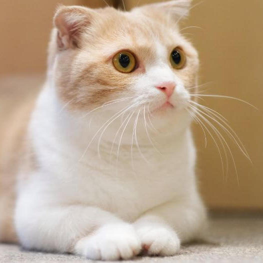

Munchkin
The Munchkin is a medium sized cat, moderate in body type and head shape, with a thick, plush coat. The coat comes in all colors and patterns, and there is also a long-haired variety.
The Munchkin is notable for their leg length as owing to a genetic mutation, the Munchkin has very short legs, which in turn gives the cat a rather long, low appearance.
